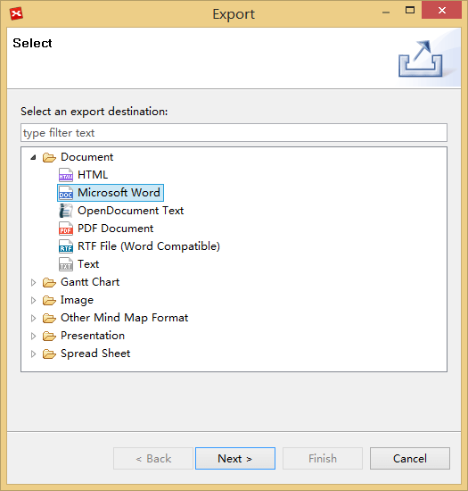
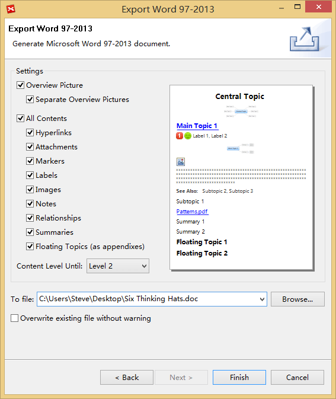
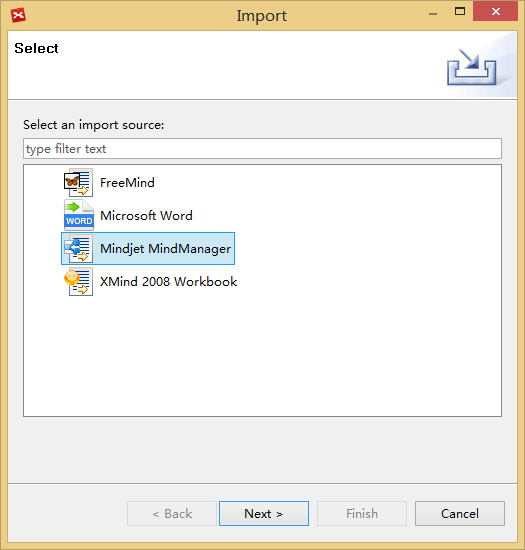
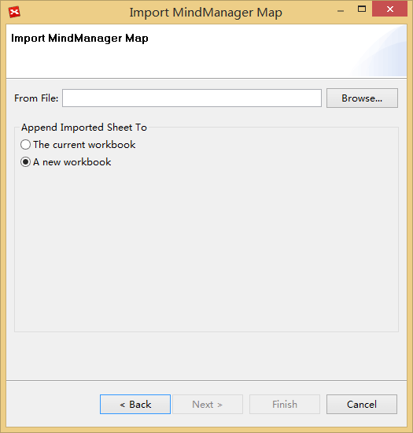

エクスポートとインポート
XMind のフリー版ではマインド マップをテキストファイルにエクスポートできます。また、MindManager と FreeMind ファイルをインポートできます。 XMind Plus/ Pro はさらに、Word、PDF、Excel、PPT、Project、FreeMind、HTML などの、 17 の追加形式のエクスポートをサポートしています。
エクスポート- メニューの[ファイル]→[エクスポート]を選択します。
- 例えば Word のような、エクスポートの形式を選択します。
- [次へ > ] をクリックして続行します。
- '参照...' をクリックして保存場所を選択し、必要に応じて、エクスポートの設定を変更します。
- [完了]をクリックします。


インポート
XMind には 4 種類のファイル形式をインポートできます： FreeMind ファイル、Mindjet MindManager ファイル、Microsoft Office Word ファイルと XMind 2008 ブックです。
インポート
- メニューの[ファイル]→[インポート]を選択します。
- 例えば Mindjet Manager のような、インポートの形式を選択します。
- インポートもとのファイルを探し、それを選択します。
- [完了]をクリックします。

